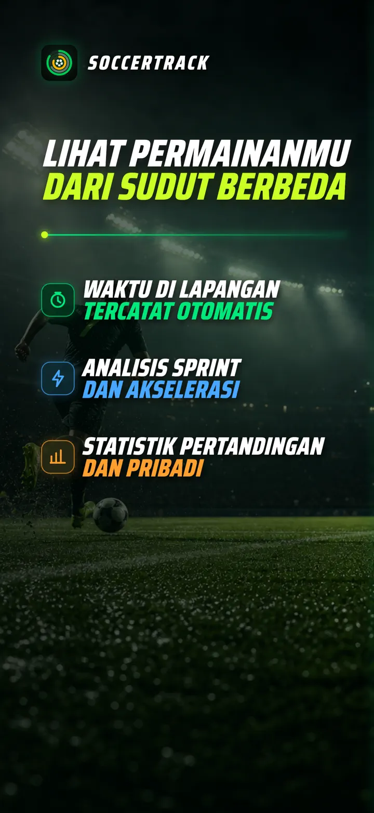
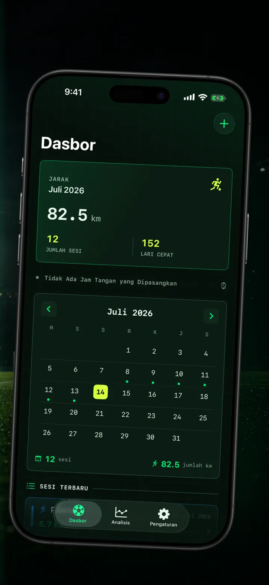
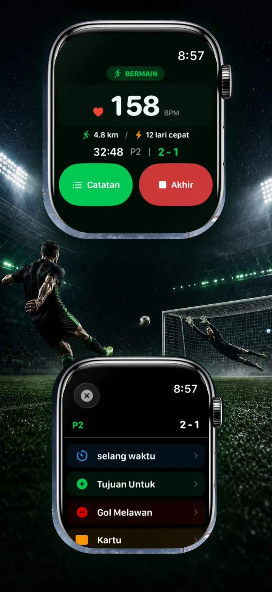
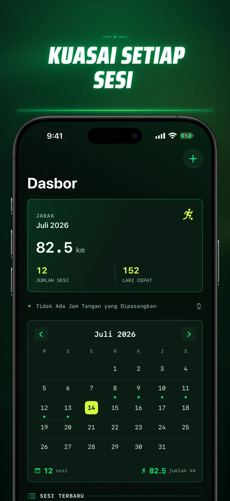
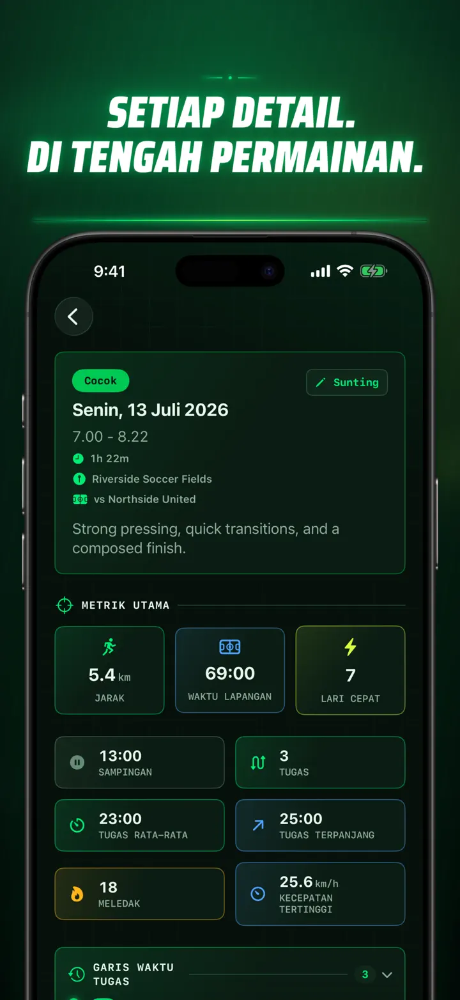
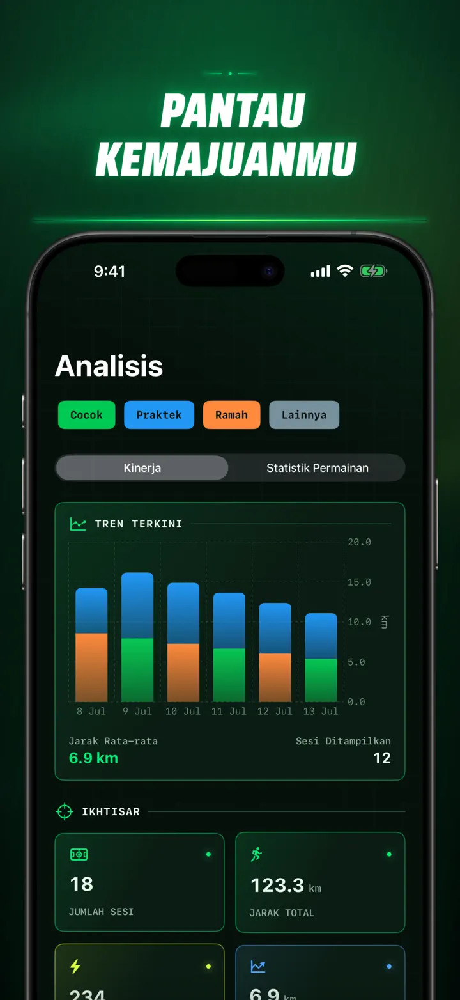
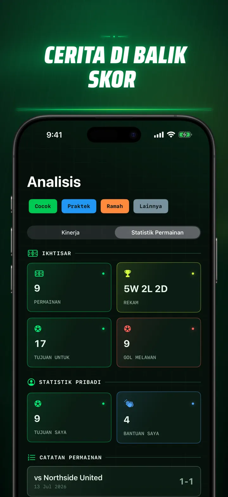
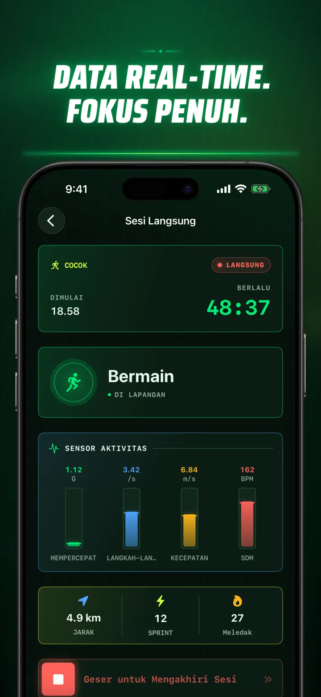
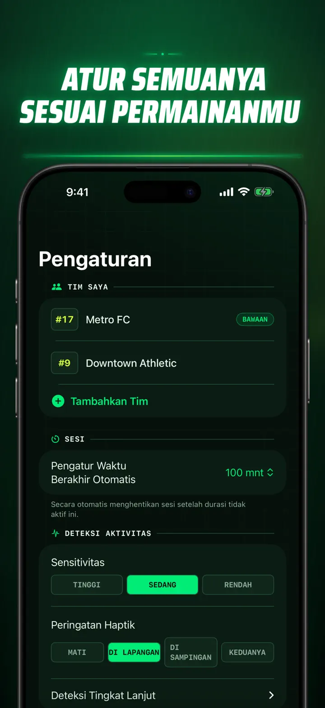
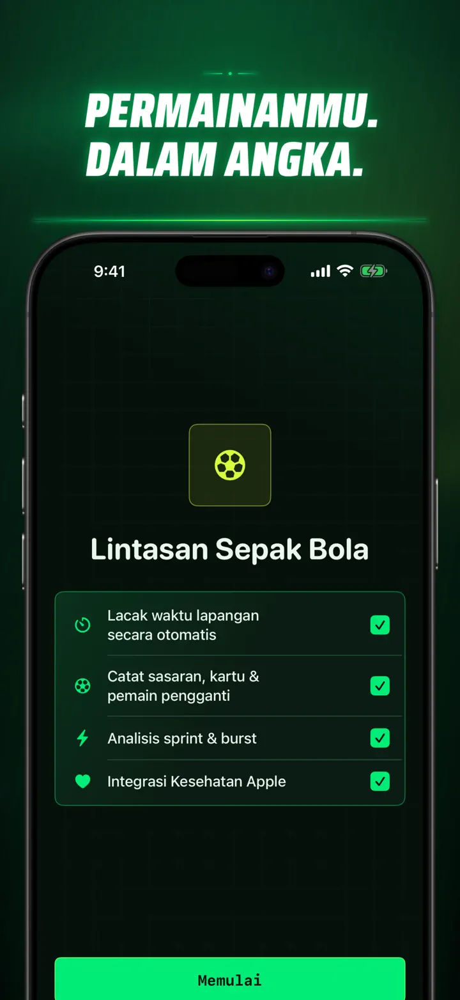

Soccer Time Track
Waktu Sepak Bola & Analisis
Mulai sesi lalu bermain. Apple Watch otomatis memisahkan waktu di lapangan dan bangku cadangan serta merekam metrik langsung, sprint, kejadian, dan tren.
Unduh di App Store
Tentang aplikasi
Lihat pertandinganmu dari sudut berbeda.
Soccer Time Track mengubah Apple Watch menjadi pendamping pertandingan bagi pemain yang ingin memahami lebih dari sekadar skor akhir. Mulai dari pergelangan tangan, fokuslah bermain, lalu lihat gambaran lengkap performamu di iPhone.
WAKTU DI LAPANGAN OTOMATIS
Ketahui kapan kamu benar-benar bermain. Sinyal gerakan, latihan, dan lokasi membantu membedakan waktu bermain, aktivitas rendah, dan waktu di bangku cadangan. Kamu mendapatkan:
- Waktu di lapangan dan bangku cadangan
- Rangkaian permainan dan linimasa yang jelas
- Rincian lengkap tentang jalannya sesi
HARI PERTANDINGAN DARI PERGELANGAN TANGAN
Pilih Pertandingan, Latihan, Persahabatan, atau Lainnya. Saat bermain, catat:
- Gol tim dan lawan
- Gol dan assist milikmu
- Kartu kuning dan merah
- Pergantian pemain dan babak
PERMAINANMU, TERUKUR
Lihat lebih dari sekadar menit melalui:
- Jarak
- Kecepatan rata-rata dan maksimum
- Sprint dan ledakan intensitas tinggi
- Detak jantung dan kalori aktif
- Kadens dan akselerasi
DATA LANGSUNG, FOKUS PENUH
iPhone yang dipasangkan dapat menampilkan metrik langsung sementara Apple Watch terus menjalankan latihan. Kamu tetap fokus pada pertandingan dan data terbentuk di latar belakang.
LIHAT PERKEMBANGANMU
Simpan pertandingan, latihan, persahabatan, dan sesi lainnya dalam satu riwayat. Jelajahi tren dan rekor pribadi, bandingkan performa, lalu tambahkan tim, nomor punggung, lawan, lokasi, dan catatan untuk menyimpan cerita di balik setiap hasil.
Perlu datamu di tempat lain? Ekspor sesi, rangkaian permainan, dan kejadian pertandingan dalam format CSV atau JSON.
DIBUAT UNTUK APPLE WATCH DAN APPLE HEALTH
Dengan izinmu, Soccer Time Track menggunakan data latihan, detak jantung, gerakan, dan lokasi untuk membuat analisis serta menyimpan latihan sepak bola yang selesai ke Apple Health. Pelacakan otomatis memerlukan Apple Watch. Kamu juga dapat menambahkan sesi secara manual di iPhone.
DATAMU, PERMAINANMU
Sesi tetap berada di perangkatmu dan, saat Sinkronisasi iCloud aktif, di basis data iCloud pribadimu. Soccer Time Track tidak memerlukan akun, tidak menampilkan iklan, dan tidak menggunakan analitik pihak ketiga.
Berhenti menebak berapa lama kamu bermain. Lihat apa yang kamu lakukan dengan setiap menitnya.
Kebijakan Privasi: https://masawata.net/SoccerTimeTrack/privacy-policy.html Ketentuan Layanan: https://www.apple.com/legal/internet-services/itunes/dev/stdeula/
Tangkapan layar









Soccer Time Track
Mulai sesi lalu bermain. Apple Watch otomatis memisahkan waktu di lapangan dan bangku cadangan serta merekam metrik langsung, sprint, kejadian, dan tren.
Unduh di App Store